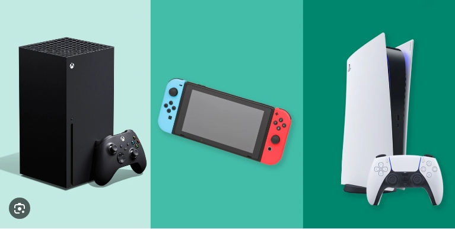

Learning Journal 5
In this week’s reading, Amir Dori emphasizes the importance of a player-centric approach in game design. He mentioned that for intuitive interfaces that allow players to focus on the gaming experience rather than navigating complex controls. He highlights the significance of real-time feedback and reward systems in maintaining player engagement, suggesting that well-designed feedback mechanisms, such as visual and audio cues for achievements, can enhance satisfaction and motivation. Dori also discusses the balance between challenge and accessibility, recommending the inclusion of adjustable difficulty levels and customizable controls to cater to a diverse player base, thereby enhancing the game's appeal and ensuring a positive user experience
Visual and audio cues for achievements provide players with immediate gratification, reinforcing a sense of accomplishment. Additionally, Dori points out the need for a balance between accessibility and challenge, suggesting that games should offer adjustable difficulty levels to cater to players of varying skill levels. This approach broadens the game’s appeal, ensuring that both casual and seasoned players can find enjoyment and satisfaction in the experience.
